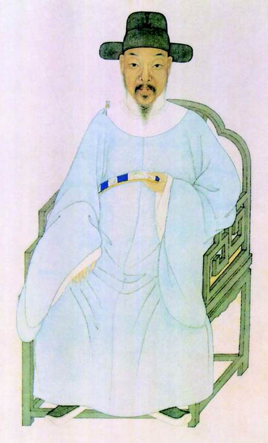
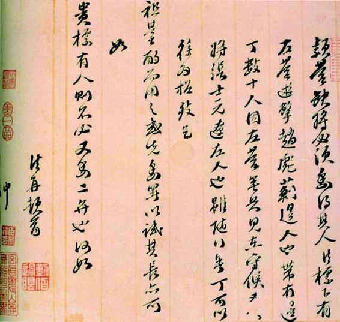
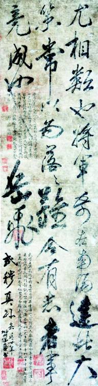
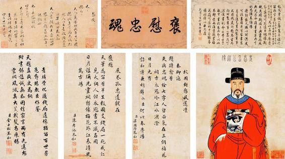
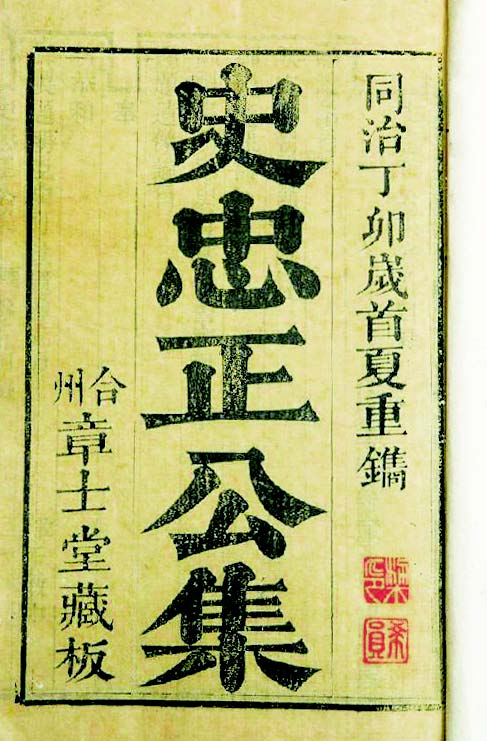

因此，继前面讲过以“凛然、威严的姿态”把他做成塑像那种遮蔽之后，现在要讲另一种反方向的遮蔽——因他身系中枢、位高权重，就觉着他无所不能或应该无所不能。
后一种遮蔽，无过乎顾诚《南明史》。此书针对历来对史可法的称道，大做反面文章，给予几乎全部负面的评价，其强辞夺理、略无恕悯，到了罕见而怪异的地步。在史可法研究还很稀薄的情况下，这种声音会无形地放大。许多缺乏阅读古籍能力，不得不借今人著作了解历史的读者，很难辨别里面的是非。
《南明史》对史可法形象的改写，集中见第五章“弘光政权的瓦解”。不及翻至正文，我们即能于目录看见第二节标题写作“睢州之变和史可法南窜”。“南窜”这种词，几十年来都被革命话语当做一种丑化而用于匪帮敌寇，眼下竟加诸史可法，令人不由讶然，诧异作者何以鄙之如此。通读之后，原因又并不曲晦。第一，作者对弘光间正派力量都不抱好感，在他眼中不光史可法，东林-复社这股知识分子新兴政治力量亦属丑类：“直至社稷倾覆，江山变色，东林-复社党人仍把责任全归之于弘光昏庸、马阮乱政，自我标榜为正人君子，实际上他们自己也是一批追名逐利、制造倾轧的能手，对弘光朝廷的覆亡负有直接责任。”[64]第二，史可法的“联虏平寇”，尤为其所不满：“似乎他在考虑同清军作战了。然而，史可法的真实意图仍然是尽量避免同清方兵戎相见，继续一厢情愿地谋求与清军配合镇压大顺农民军。”[65]通过用词，我们清楚体会到了作者的感情倾向。熟悉昔日笔法的读者知道，“真实意图”、“配合镇压”，都是用于“批判”和“揭露”的。
其实呢，史可法或明朝当局报“君父之仇”、以李自成为不共戴天之敌，乃当时伦理上必有之义，“平寇”先于“却虏”的顺序也实出必然（且不说彼时满清击走李自成，对明朝还算“有恩”）。本来，这都是昭然若揭、天下大白的道理，哪有什么需要隐藏的“真实意图”。至于“镇压”字眼里所含“当代义愤”，更非情理可解；那时没有马克思主义，史可法也不曾读到《中国社会各阶级分析》，或“在中国封建社会里，只有这种农民的阶级斗争、农民的起义和农民的战争，才是历史发展的真正动力”[66]这种论述，难道身为明朝枢臣，他还应爱戴李自成不成？
书中涉史可法而罔顾事实的笔触，比比皆是。例如，高杰死后，高夫人请以其子拜史可法为义父，而史可法不允。顾诚说：
这本来是史可法增进同高部将士感情的一个机会，然而史可法却因为高部是“流贼”出身，坚决拒绝，命高杰子拜提督江北兵马粮饷太监高起潜为义父。由此可见史可法政治偏见之深和不通权变。[67]
“因为高部是‘流贼’出身，坚决拒绝”，这样的说法，不知其据何书何载。我从诸记看到的刚好相反。史可法不但从未以“流贼出身”嫌弃高部，反而对其格外重视、倚重，以致有一定“偏爱”。这一点，从当初高杰争扬州时即如此，扬州市民对史可法的处理很有意见。史可法这种态度有两个原因。一是因为高杰实力最强，史可法心中将其视为北进的希望；其次，跟高杰为人有关，他野蛮粗狠、杀人如麻，但心地直爽、尚可感化，是个鲁智深式人物，后来证明确实如此。总之，史可法对高杰和他的部队不但没有“政治偏见”，简直还可以说另眼相待。同样，史可法在高杰部威望很高，根本不像顾诚说的感情有待“增进”。而当日情势（睢州大变后），史可法与高部间这种感情色彩，与其说该加强，不如说正好要适当淡化。他是朝廷在前线负责全局的督师，江北有四镇，非高部一镇，而四镇修怨日久，睢州大变后黄得功、刘泽清等正摩拳擦掌、寻隙滋事，冲突一触即发。往日，史可法既已令人觉得对高部不无偏倚，此时此刻，息事宁人犹且不及，再收高子为义子岂不火上浇油？高夫人之请，意图甚明，而史可法的不便应允，也是一目了然。此与“流贼出身”何干？
从《南明史》读到这类段落，我每每不知所措。直接看其议论，会以为作者于若干史实懵然无知，乃有与明确事实大相径庭的错判。但我们很清楚，原因不在此。作为资深的明史专家，那些并不偏僻的材料，理应在其所阅之中；恐怕，还是积年训养下渗入思维的“阶级斗争”意识及其史学模式起了作用。自五十年代或更早一点，以政治义理强史以就，便是当代史学根深叶茂的传统。代表者如郭沫若，学问未必不深厚，对史实未必不胸悬明镜，却在具体论述上，往往义理挂帅、以今昧古。这种风韵被泽数代，直至今日仍属可观。

史可法像 清•叶衍兰绘
叶衍兰（1823-1898） 清代后期书画家，叶恭绰的祖父。他这幅史可法像，虽亦出自想象，但至少尊重史可法同时代人的目击，没有虚饰拔高。

史可法信函
收信人不明，内容是推荐两位将领。一名赵彪，“蓟边人”，一名张士元，“辽左人”。从两人籍贯看，信中“左营”应即左良玉部。

有史可法、杨继盛题跋的岳飞“手迹”
2009 年据称发现一幅岳飞遗墨，更巧的是上有杨继盛、史可法两人题跋。杨题：“武穆真迹。”史公所题在右侧：“⋯⋯考椒山（杨继盛号椒山）生平事迹，忠勇之处不让武穆，此卷可称双忠合璧矣。”2011 年3 月1 日《扬州晚报》报道：“近日，故宫博物院专家将来扬作最后鉴定。”下文不知如何。岳飞真迹至今无一可以确认，此幅更是成疑。

乾隆表彰史可法
满清在杀掉史可法一百年后，对他大力表彰。乾隆四十二年，爱新觉罗•弘历御题“褒慰忠魂”，亲制题像诗并文，共史公画像、家书，及大学士于敏中抄缮的《复摄政睿亲王书》、诸廷臣对御诗的和韵之作等，作为一卷装潢箧贮，置梅花岭史祠：“此卷如有愿求展阅者，亦听其便，但当加意护守，勿使稍致污损。”（《赐题遗像谕旨》）上即卷中部分图文。

同治刻本《史忠正公集》
史可法既获清廷官方表彰，由义子史德威曾孙史开纯响应乾隆圣旨，将遗稿“分编列为四卷”，是为《史忠正公集》。书中文字，多有删改。
定策及督师江北以来，史可法的言策、举措、行状，有大量材料及记述，《南渡录》《甲乙事案》《幸存录》《圣安本纪》《国榷》《明季南略》《爝火录》等等，载之甚明，仅史可法亲上奏章，《史忠正公集》即收有二十三篇全文，它们虽经满清改窜，却仍不失研究工作的资料首选，而《南明史》颇置不顾，极乐意采信某些非主流言说。例如：
沛县著名文人阎尔梅当时正在史可法幕中，劝他“渡河复山东，不听；劝之西征复河南，又不听；劝之稍留徐州为河北望，又不听”，“一以退保扬州为上策”，即所谓：“左右有言使公惧，拔营退走扬州去。两河义士雄心灰，号泣攀辕公不驻。”这就是被许多人盛誉为“抗清英雄”的史可法的本来面目。[68]
阎古古（尔梅号）其人，血气恣扬，慷慨激昂，有侠士风：
破产养死士，罹狱几濒于死。手刃爱妾亡去，历齐、楚、蜀、粤、秦、晋、燕塞。被株连者数十百家，时有不及附范孟博之叹。[69]
他是豪杰品质、激情性格，义薄云天不假，可往往行事冲动，但凭胸臆而激于一时。他的诗，就反映着这类特点。时人论之：“出古古口中，都无恒语。”[70]“徐州阎古古尔梅，独工七律，对仗极齐整，时有生气，亦颇能造警句，惟粗率廓落处太多耳。”[71]因了这性情，加上沛县地近山东，他以往在山东游历多、感情深，收复愿望特别迫切，惜乎想法如其诗，“粗率廓落处太多”。他“散家财万金，结豪杰，往来山东、河南，数有兵起，旋皆破灭”[72]，这种奋不顾身、不计后果、鱼死网破的个人英雄主义，史可法无从效仿。两人身份不同，阎尔梅可以“不在其位，不谋其政”，史可法不行。史可法是朝廷大臣，手下军队乃朝廷饷银所养，非他个人私募的兵丁，他没法做到阎尔梅那样，仗义即行。况且朝中掣肘、刁难、暗算等种种复杂内情，更非以为“抛头颅、洒热血”即济其事的阎尔梅所能想象者。这就是阎尔梅“数上奇计”，而史可法不能用的原因。至于“劝之稍留徐州为河北望，又不听”，又是怎么回事呢？彼时，高杰被害，史可法星夜赶来徐州，稳定帅位空虚、军心浮动的高杰所部。不料，事情刚刚停妥就传来消息，与高杰宿怨极深的黄得功闻风而动，欲进兵扬州，尽杀高部留在后方的妻子家眷。一闻此讯，高部李成栋等将即从徐州拔城而退。史可法忧心如焚，他要紧急赶往扬州制止内讧，对于阎尔梅之劝留，当然不能从命。此事原委不过如此，顾诚却以此暗示史可法不肯抗清。说到力主“恢复”，满朝上下我不知还有谁比史可法更切盼这种局面，唯一的几乎每奏必言“恢复”“北进”的大臣，不就是史可法么？凡此，顾诚不可能不清楚，然而他却引了几行明显激于辞气的诗句，来揭露史可法的“本来面目”。
阎古古虽然偏激，但忠肝义胆，他对史可法不满系忠义所致，不存恶意。应廷吉就不一样了。应廷吉对史可法暗怀幽怨，其于扬州之变后所著《青燐屑》，以史幕近僚身份讲述许多“独家”见闻。职是之故，它是我们较重视的参考书，然而，其中不少地方挟怨寄私，彰彰明甚，即无慧眼亦不难见——有关应廷吉之怨的由来，及《青燐屑》抹黑史可法之处，后面再具体指出——而《南明史》第五章第四节“扬州失守”，却主要以《青燐屑》为本，尽采其意于史可法不利的说法。如说“史可法惊惶失措，胸中漫无主见”[73]；又说，面对几支逃军，“史可法以倘若阻止他们出城投降恐生内变为理由，听之任之，不加禁止”[74]，似乎“恐生内变”是史可法所编造的托辞；还如，“当清军初抵城下时，总兵刘肇基建议乘敌大众未到，立足未稳，出城一战。史可法却说：‘锐气不可轻试，且养全锋以待其毙。’”[75]暗示史可法贻误战机、坐以待毙。情节均取自《青燐屑》，顾氏则在此基础上变换字眼，宛转发挥、添油加醋，像“惊慌失措”（应廷吉原话为“阁部方寸乱矣”）、“以……为理由”、“却说”之类，皆属此类小技巧，以将读者印象进一步引向不佳。
最后，作者拿出了一揽子评价：
作为军事家，他以堂堂督师阁部的身分经营江北将近一年，耗费了大量的人力、物力、财力，却一筹莫展，毫无作为。直到清军主力南下，他所节制的将领绝大多数倒戈投降，变成清朝征服南明的劲旅，史可法驭将无能由此可见。即以扬州战役而言，史可法也没有组织有效的抵抗……把史可法捧为巨星，无非是因为他官大；孰不知官高任重，身系社稷安然，史可法在军国重务上决策几乎全部错误，对于弘光朝廷的土崩瓦解负有不可推卸的责任。[76]
未遑亲读史料的读者，见了这一段，不知将把史可法想成如何渺小可鄙之人。而稍知史事者，则将极诧于作者抹煞、昧没情理一至于斯！
上面每个具体指责，都无视明确事实，我们现在就一一辨之。
且以所谓“耗费了大量的人力、物力、财力”为例。真相是什么？真相是：史可法督师江北，最苦无饷，名义上财政应拨钱款数额明确，事实上则迟迟不能落实，诸记以及史可法奏疏中，催讨记录正不知有多少，无奈，史可法不得不思屯田图之，甚至亲至大户人家劝捐……我们且看几个材料。甲申八月，为军饷屡讨不至，性格善忍的史可法罕见地发起牢骚：
近闻诸臣条奏，但知催兵，不知计饷。天下宁有不食之兵、不饲之马？可以进取者，目前但有饷银可应，臣即躬率橐鞬为诸镇前驱。[77]
九月间：
以高杰方刻期进取，为请饷于朝，而马士英以镇将与可法协，为不利己，阴裁抑之。可法因疏言：“臣皇皇渡江，岂直调和四镇哉？朝廷之设四镇，岂直江北数郡哉？高杰请进取开、归，直捣关、洛，其志甚锐。臣于六月请粮，今九月矣，岂有不食之卒可以杀贼乎？”士英益靳之，不发，数诏趣出师，可法举示四镇，皆曰：“不能给我饷，而责我战乎？”由是坐困。[78]
十一月，史可法敦促朝廷下达“讨贼诏书”，又提到：
兵行最苦无粮，搜括既不可行，劝输亦难为继。请将不急之工程，可已之繁费，朝夕之燕衎，左右之进献，一切报罢……振举朝之精神，萃万方之物力，尽并于选将练兵一事，庶人心可鼓，天意可回。[79]
同月，一股清兵首次出现于黄河以南的宿迁、邳州一带，史可法派总兵刘肇基、李栖凤往援，同时将动向上报南京：
已而报至南都，士英大笑。时杨士聪在坐，惊问：“何为？”士英曰：“君以为诚有是事邪？此史道邻妙用也。岁将暮矣，将吏例应叙功，钱粮例应销算，为叙功、销算地也。”[80]
马士英念念于猜忌、掣肘，有此人在，而说史可法“耗费了大量的人力、物力、财力”，罔顾事实，岂可如此？此说之诬史可法，较马士英闻报笑称不过是“为叙功、销算地也”，颇有异曲同工之处。
次如“驭将无能”。若能平心而论，都不会否认史可法固有督师之名，实则迹近光杆司令。且不说马、阮在南京始终作梗、遥加沮抑，即诸家镇将，除高杰后为史可法所感、愿供驱策，哪个不是拥兵自重、唯知自保不肯利国的军阀？史可法对他们确不能驭，然而，原因竟是他“无能”么？
还有扬州“没有组织有效的抵抗”的问题。粗知当时实情者晓得，清兵迫近之前，黄得功和刘良佐已被马士英西撤对付左良玉，而刘泽清和高部李成栋则各率大军逃至沿江。及满清兵临城下，扬州守军又有甘肃镇李栖凤、高岐凤部及川军胡尚友、韩尚良部先后逃走、投降。不要说野战主力，稍有战斗力的地方部队也不过是刘肇基所率四百余人[81]。如此兵微将寡，你让史可法怎样对装备红衣大炮的多铎大军实施“有效抵抗”？史载颇明：“城内兵能战者少，可法乃闭门坚守。”[82]当此绝境，史可法不动如山，以身殉国，我们又何忍责其更多？
而尤不可理喻，明军的普遍望风而降，居然也归咎于史可法。稍具理智都不可能无视两个基本事实：诸将都降了，唯独史可法作为督师未降；南京整个内阁班子，或降或逃，唯独史可法未降未逃而死任上。面此事实，“他所节制的将领绝大多数倒戈投降，变成清朝征服南明的劲旅”这句话，究竟想说什么？凡此种种，如果据而认为顾氏对史可法有一种怪异难解的敌意，实在不能算强加于他。不过，怪异难解仅是从事实或“人之常情”角度讲，自顾氏本人观念而言，却一点不难解释。我就从书中读出了两点，一是作者对史可法以“平寇”优先深深嗛恨，无法释怀；二是出于如下一种心迹：“把史可法捧为巨星，无非是因为他官大；孰不知官高任重……”还是那个“大人物”的话题，亦即质疑史可法是否配得上“大人物”。你都官至宰辅、兵部尚书了，却不能扭转乾坤、一柱擎天；如此，讥而啐之，有何不可？他想必主张英雄和伟人都是伟大、光荣而正确的，而失败和没落如史可法者，必定不配。